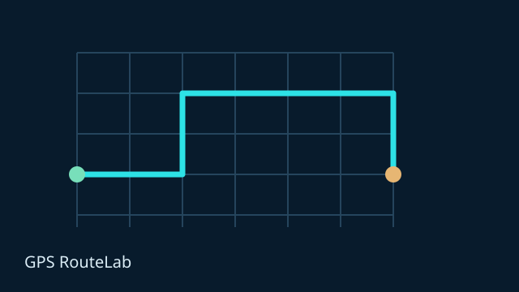
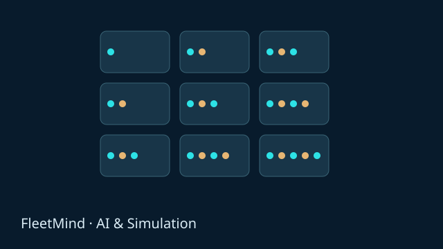

MVP executável · sintético
GPS RouteLab
Roteamento A*, trânsito e associação de posições GPS à rede viária.
Urban mobility · Independent research
Três laboratórios reproduzíveis de mobilidade urbana: rotas GPS, dinâmica de carros e decisões inteligentes de frotas. Python, experimentação e demonstrações interativas.
Independent research · Synthetic data · No real-world performance claim
3 projetos

Roteamento A*, trânsito e associação de posições GPS à rede viária.
Urban mobility · Independent research

Microssimulação de carros, frenagem e ondas de congestionamento com IDM.
Urban mobility · Independent research

Plataforma Python de frotas, demanda sintética, previsão e reposicionamento com IA.
Urban mobility · Independent research